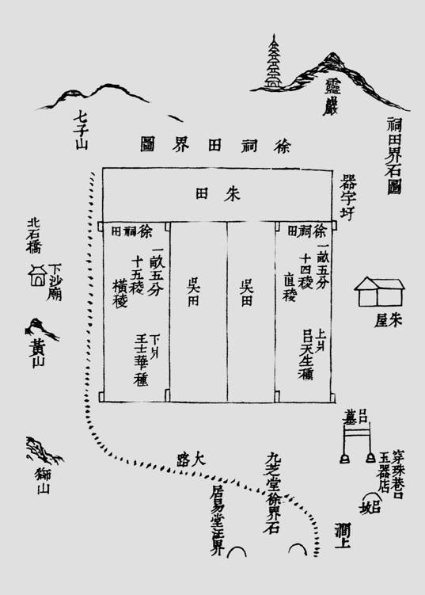
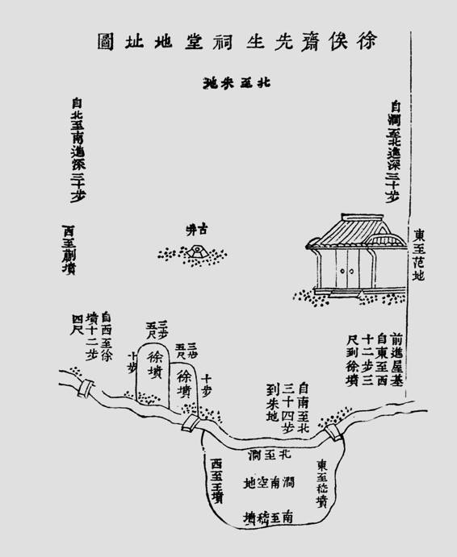

不过我们得说，在徐枋身上，反清其实是个小题目。虽然他的以“隐”抗清，颇有特色，但跟众多颠踣亡命的志士比，终非可以大书特书的人物。然而这并不削弱他的意义，事实上他有更广的历史幅度，是超乎特定时代之上的。
他寄寓着古代士阶层一种“核心价值观”。他既从其中来，也经由个人实践而给以发扬，直至构成一个总结。
我们借《史记》说明这一点。《史记》体例，三足而鼎，曰本纪、世家、列传。本纪纪帝王，世家纪诸侯，列传“叙列人臣事迹”[94]。列传七十，今本为“老子伯夷列传第一”，这不是原貌。“老子、庄子开元二十三年奉敕升为列传首，处夷、齐上。”[95]李唐王朝自认老子后人，胳膊肘向里拐，把老子及其一派的庄子提到首位，而原本老庄与韩非“同传第三”。换言之，在太史公当时，七十篇列传开篇就是伯夷、叔齐故事。
其中包含两个主要情节。一是兄弟让位，夷、齐同为商代孤竹国君之子，父欲立叔齐，叔齐让长兄伯夷，伯夷以遵父命而不肯、逃走，叔齐则以长幼之序，也不肯、逃走，国人遂立孤竹君中子。二是等到武王伐纣，殷亡周兴，而夷、齐“耻之，义不食周粟，隐于首阳山，采薇而食之”[96]，仅靠野菜充饥，直至饿死。
两件事迹，前者讲循礼义为人、不贪权利，后者讲对有违道义的现实不合作、拒绝。本来，殷亡实属不义自毙，周革其命却是以仁除恶。但在夷、齐看来，周的正义形象亦有瑕疵，他们有歌辞吟道：
登彼西山兮，采其薇矣。以暴易暴兮，不知其非矣。[97]
似乎，他们思想竟和老托尔斯泰、圣雄甘地一路，是尽善至美论者，不认为所反对事物是恶的，便有理由采取恶的方式来反对。他们用这标准衡量周武王，觉得他用一种暴力推翻另一种暴力，还不知自己错在何处（“不知其非”），实在不值得赞美。为了秉持心中道义，他们拒食周朝生产的粮食，宁肯野菜充饥（野菜得之天地，与周朝无关）而一点点饿死。
夷齐故事，反映中国古代士阶层有极苛细的正义观、是非观。它不限于或满足于泛泛区分善恶，甚而对合乎正义大方向的事物，也究根刨底，考问正义是否裹挟着恶。
而更重要的，夷齐传统标识了士的独立意识。任何时候提到这传统，都是重申知识者应该保持独立品格。本来，夷齐反对的武王、周公，乃是儒家眼中“圣人”，从具体观点层面，儒家并不同意他们。但孔子和孟子显然都认为，跟坚持己见、独立精神、“适于义而已，不顾人之是非”[98]的品格比，观点不同不算什么。《论语》三次提到夷齐，表扬他们“古之贤人”、“求仁而得仁”[99]。孟子亦誉为“圣之清者”：
伯夷，目不视恶色，耳不听恶声，非其君不事，非其民不使。治则进，乱则退。横政之所出，横民之所止，不忍居也……故闻伯夷之风者，顽夫廉，懦夫有立志。[100]
古史讲“书法”，《史记》载述“人臣事迹”，选择两位弃隐者破题，就是一种“书法”，以伸张士阶层独立不倚，舍正义无所认、无所从，对逆天违道能够拒绝和不合作，甚至是敢于抛别的精神，认这精神有头等的重要性。
因此，沿着夷齐传统而来的隐者之流，以往在中国文化里，主要是自主精神的体现。从最早的代表许由、夷齐，到孔子时代的接舆、长沮、桀溺，到陶渊明，再到徐枋……这伟大的传统，不单源远流长，也从来被目为高拔、洁净品质。只是到了当代，隐逸才渐为轻蔑乃至负面对象。1959年，毛泽东《七律•登庐山》有句“陶令不知何处去，桃花源里可耕田”，用陶渊明借喻对“大跃进”持怀疑或游离态度的人。更早，1949年有《别了，司徒雷登》批判伯夷：

徐祠田界图
据徐达源为《涧上草堂纪略》所收《公议潘徐合同议单》（潘耒赎回涧上草堂契约）而写的附识，“涧上草堂祠屋地址共五亩八分”。这几亩地所在地点，及前后左右各家田产的分界，本图标之颇明。

徐俟斋先生祠堂地址图
徐枋殁后， 涧上草堂为豪强所得，幸赖门生潘耒次耕先生出资赎回，改建祠堂，则徐祠即其故居涧上草堂矣。始建于康熙三十九年，嘉庆、道光间各有修葺。据罗振玉《徐俟斋先生年谱》：“后燬，同治六年重建。”此为徐祠最后一次修建记录。闻之苏州当地人士，近年曾经多方找寻徐枋遗迹，而无所确定。此图取自徐达源《涧上草堂纪略》，中有若干地名（包括徐坟），且于位置距离等亦有具体描述，可资参考。
唐朝的韩愈写过《伯夷颂》，颂的是一个对自己国家的人民不负责任、开小差逃跑、又反对武王领导的当时的人民解放战争、颇有些“民主个人主义”思想的伯夷，那是颂错了。[101]
抛弃人民、逃跑、反对革命、个人主义，这些字眼，重新构建了当代语境下的隐者形象。久之，他们在中国历史和文化中原本的含义，已少有人知。